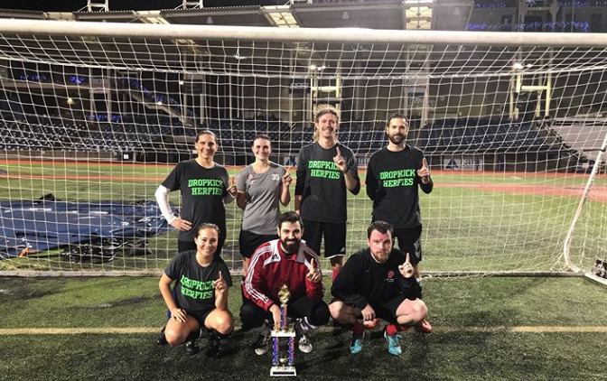
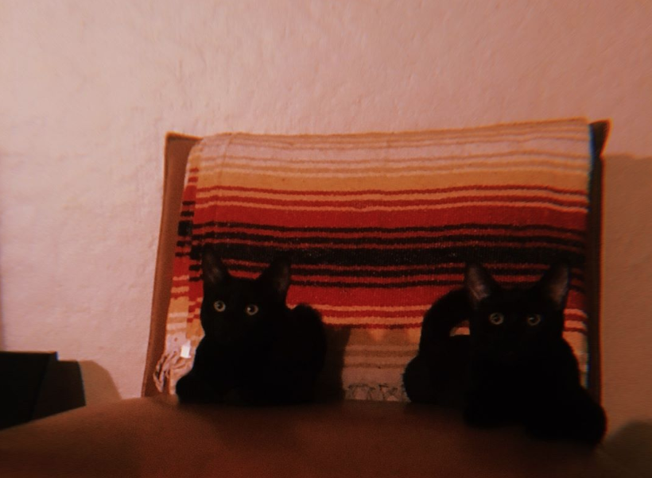
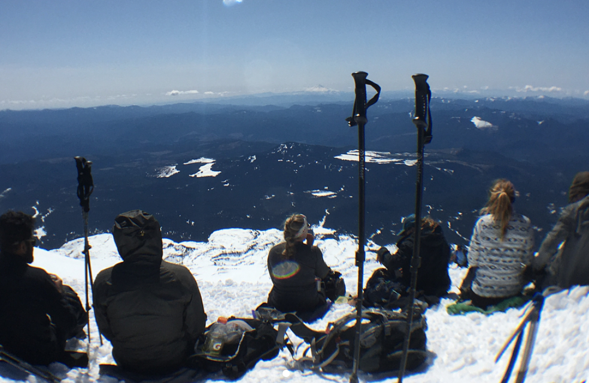

I was born in Olongapo City, Philippines, but have resided in the PNW for most of my life. I grew up in a fairly diverse city, Federal Way, WA along with my four brothers Jhunar, John, Justin and Jason. As kids we often played soccer outside using our apartment's speed bumps as goals. Injuries were abound as you can imagine, playing on concrete and pausing, yelling "CAR", every time we needed to make way for a vehicle about to drive onto our "field". Soccer was the first sport I fell in love with and continue to play today in adult leagues around Portland.
After high school I ended up at Washington State University, mostly becuase that's where my best friend got in. The military would have been a likely second choice, coming from a family with a heavy background in it. After a few months in Pullman I found myself yearning for a landscape outside of the Palouse so applied to Western Washington University after my Freshman year. I didn't end up getting into WWU, but moved to Bellingham, WA regardless along with my best friend who had gotten in. There I did a year at their community college and then finally got into the University. I graduated at WWU with a degree in Accounting and International Business, not because I loved the subject matter.
I currently reside in beautiful Portland, OR utilizing my degree at a company called Springbrook Software in their support department. I speak to anyone from IT, to city clerks to city accountants on a daily basis answering questions about our software and resolving business cases, however, I recently had a change of heart career-wise and have persued coding for the last year or so. I've been meeting with a mentor at work who is a software engineer, learning c# and sql along with reading/understanding our code base, however, I wanted to take a class that would hold me more accountable, and here I am at Epicodus, taking their part-time evening Intro to Programming class.
About me in photos:
Springbrook soccer team
"Crook" and "Oliver"
Summiting Mt. St. Helens
The following are projects completed at Epicodus:
The infamous "Hello World" page
A website about an Animal Shelter, run by Alex and I
Cupcakes, what more do you need?
A project I completed as a part of a 4-hr workshop at Epicodus